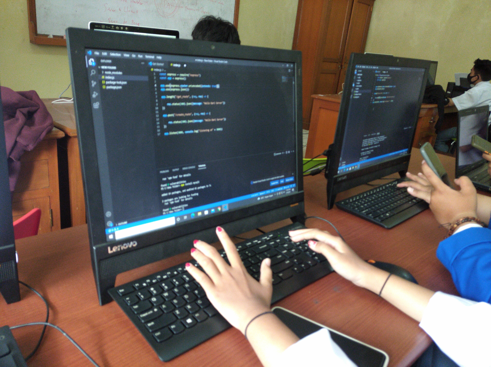
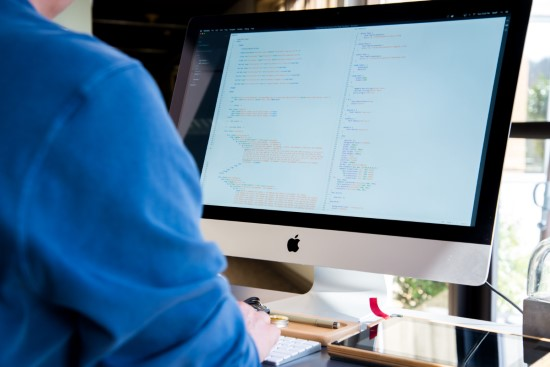
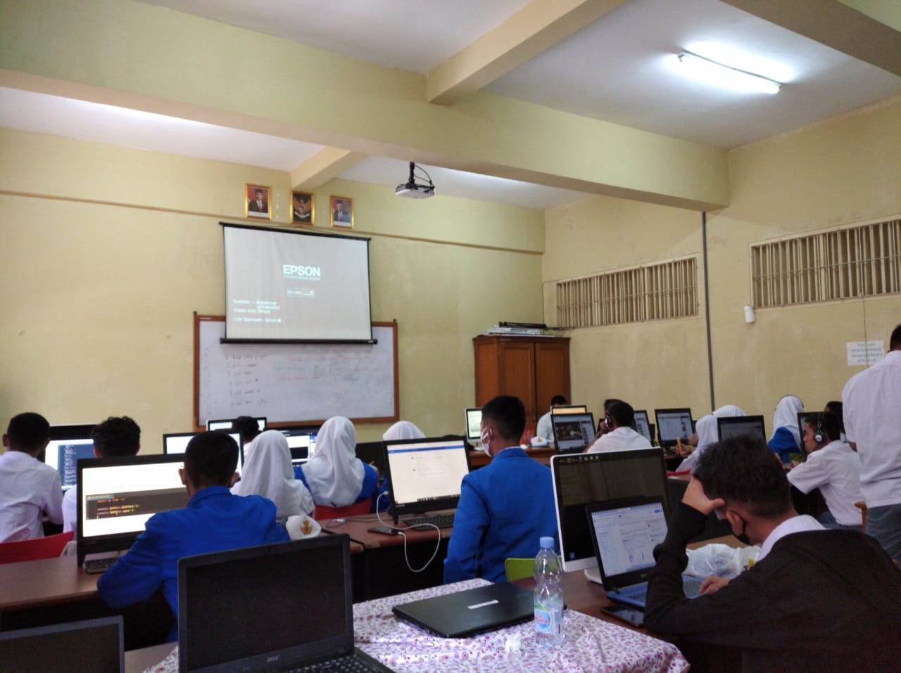

4 Lab Praktikum
Akses Internet ditiap Lab dan Kelas
Perangkat Computer Bagi siswa
Proyektor di tiap Lab dan Kelas
Ac di setiap Lab

REKAYASA PERANGKAT LUNAK Merupakan salah satu jurusan yang ada di SMK Yadika Soreang. RPL adalah sebuah jurusan yang mempelajari dan mendalami semua cara-cara pengembangan perangkat lunak termasuk pembuatan, pemeliharaan, manajemen organisasi pengembangan perangkat lunak dan manajemen kualitas. Bukan hanya itu, RPL juga berkaitan dengan software komputer mulai dari pembuatan website, aplikasi, game dan semua yang berkaitan dengan pemrograman dengan menguasai bahasa pemrograman tersebut. Intinya RPL tidak akan jauh-jauh dari tiga hal yaitu Coding, Desain dan Algoritma yang akan menjadi kunci keberhasilan rekayasa perangkat lunak tersebut.

Kegiatan RPL antara lain mempelajari bahasa
pemrograman paling dasar hingga dapat
membuat website.
selain membuat website, jurusan RPL
juga mempelajari tentang robotik,
desain grafis,mempelajari hardware Computer.
Di tahun ini bidang jurusan RPL sedang
melaksanakan kelas industri.
kelas industri, ialah kegiatan pembelajaran
sekaligus Praktik Kerja Lapangan (PKL)
yang diselenggarakan oleh sekolah yang telah
Join dengan pihak industri.
di kelas industri ini siswa dibimbing agar
bisa memenuhi kebutuhan standar industri.